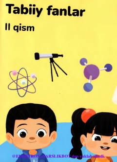

TF4-sinf o'quvchilari uchun Tabiiy fanlar fanidan 2-qism darslik.
Ushbu darslik umumiy o'rta ta'lim maktablarining 4-sinf o'quvchilari uchun mo'ljallangan bo'lib, tabiat hodisalari, sayyoramiz, hayvonot va o'simlik dunyosi, shuningdek moddalar, atmosfera va gidrosfera haqida ma'lumot beradi. Kitobda o'quvchilarning bilim olishini qiziqarli qilish uchun turli amaliy topshiriqlar va loyiha ishlari o'rin olgan.